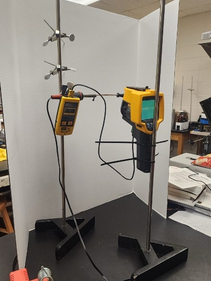
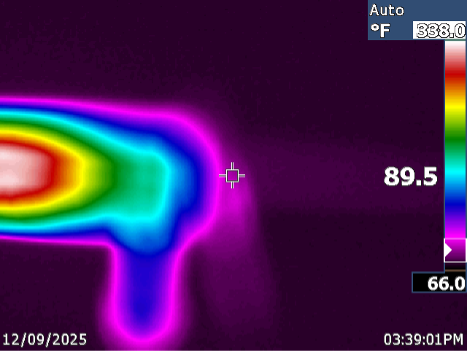
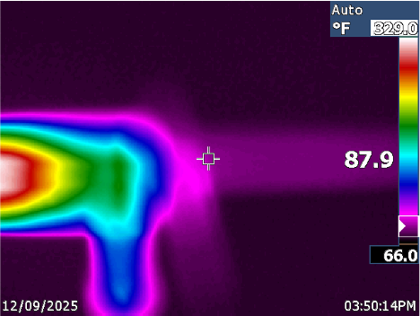
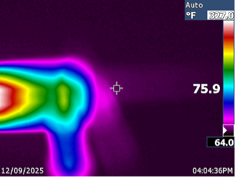
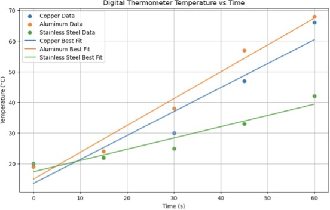
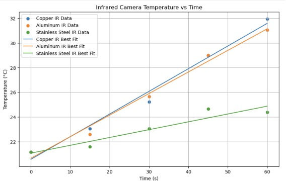
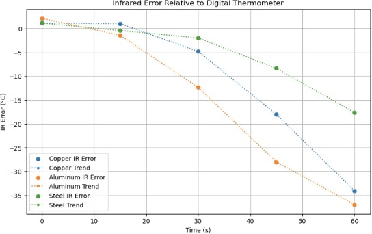

Thermal Testing • Instrumentation • Python • Data Analysis
Experimental comparison of the heating behavior of copper, aluminum, and stainless steel using infrared thermography, contact temperature measurements, and Python-based analysis.
This experiment investigated differences in heat-transfer behavior among copper, aluminum, and stainless-steel rods. Each material was heated under similar experimental conditions while temperature changes were recorded using both a Fluke Ti10 infrared camera and a contact digital thermometer.
The measurements were analyzed using Python to compare temperature-versus-time behavior, determine heating rates, evaluate infrared measurement error, and investigate the effects of material emissivity and experimental geometry.
Compare the heating behavior of copper, aluminum, and stainless steel under controlled heating conditions.
Evaluate non-contact infrared measurements against direct-contact digital thermometer readings.
Examine how emissivity, surface properties, and target size influence infrared temperature accuracy.
Copper, aluminum, and stainless-steel rods were mounted using laboratory stands and clamps. A soldering iron was used as the heat source while temperature measurements were collected at timed intervals.
A Fluke Ti10 infrared camera provided non-contact surface temperature measurements while a contact thermometer provided reference measurements. A white background was positioned behind the rods to improve thermal-image visibility and measurement consistency.

Laboratory setup using a Fluke Ti10 infrared camera, contact thermometer, metal rods, support stands, and controlled heating.
Temperature measurements were processed in Python and linear regression was applied to temperature-versus-time data to estimate the heating rate of each material.
The experimentally determined digital-thermometer heating rates were approximately 0.780 °C/s for copper, 0.873 °C/s for aluminum, and 0.367 °C/s for stainless steel. Copper and aluminum therefore showed substantially faster temperature increases than stainless steel.
Measured heating rate for the copper rod based on linear regression of contact-temperature data.
Measured heating rate for the aluminum rod during the experimental heating period.
Stainless steel showed a substantially lower heating rate than copper and aluminum.
The infrared camera increasingly underestimated temperature as the metallic rods became hotter. The effect was strongest for aluminum and copper and smaller for stainless steel.
Average infrared measurement errors were approximately −10.92 °C for copper, −15.30 °C for aluminum, and −5.42 °C for stainless steel.
The results highlighted an important limitation of infrared thermography: polished metallic surfaces can have low emissivity and reflect surrounding infrared radiation, reducing the accuracy of non-contact temperature measurements. The small rod diameter also limited the number of image pixels representing the measured surface.
Experimental setup, infrared images, and representative Python-generated plots from the thermal analysis.
Infrared camera and contact thermometer positioned to measure the heated metallic rods.

Infrared image of the copper rod after 60 seconds of heating, with the camera reporting approximately 89.5 °F.

Infrared image of the aluminum rod after 60 seconds of heating, with the camera reporting approximately 87.9 °F.

Infrared image of the stainless-steel rod after 60 seconds of heating, with the camera reporting approximately 75.9 °F.

Contact-temperature measurements and linear regression trends for copper, aluminum, and stainless steel.

Infrared temperature measurements showing differences in observed heating behavior among the three materials.

Difference between infrared-camera measurements and direct-contact thermometer readings as temperature increased.
Select any image to view the full-resolution version.
The experiment demonstrated that measurement technique can significantly influence experimental results. While infrared thermography provides convenient non-contact temperature measurement, surface emissivity and target geometry must be considered when interpreting results.
The project also reinforced the importance of validating one measurement method against another, analyzing experimental uncertainty, and using quantitative data analysis to distinguish material behavior from measurement limitations.